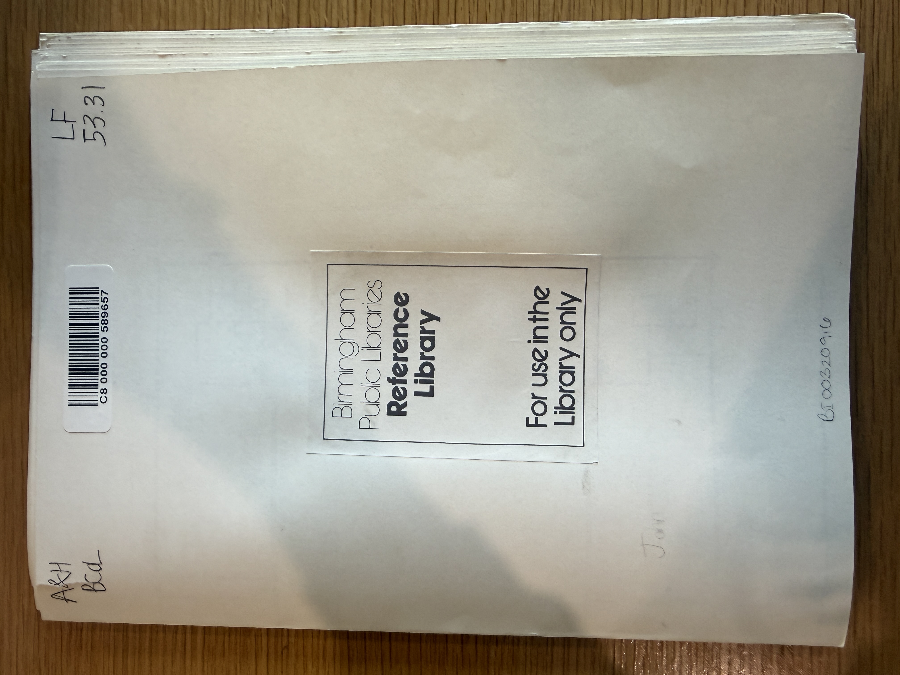
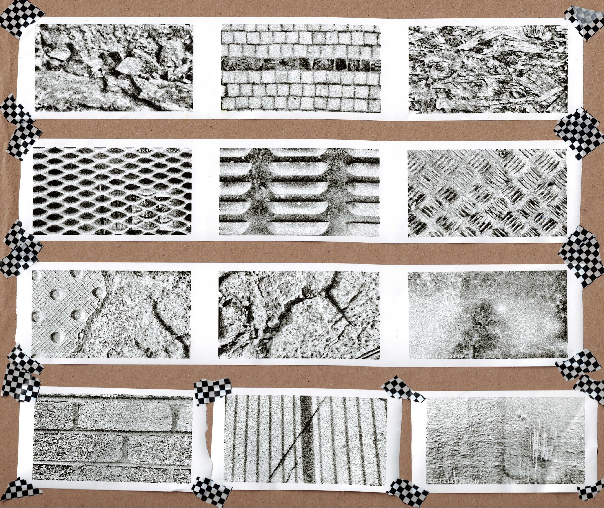
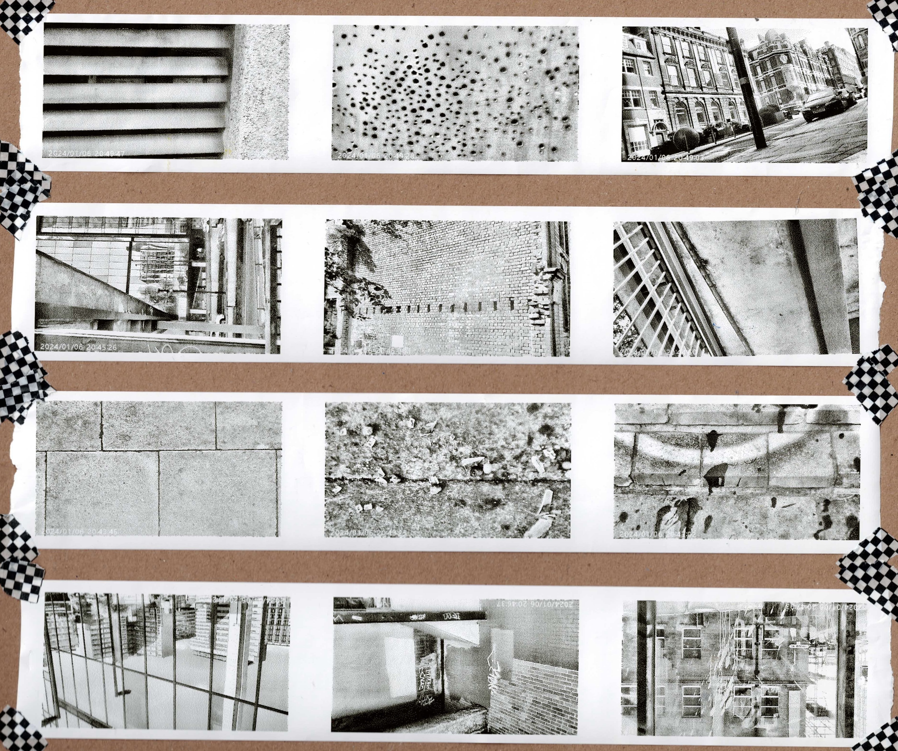
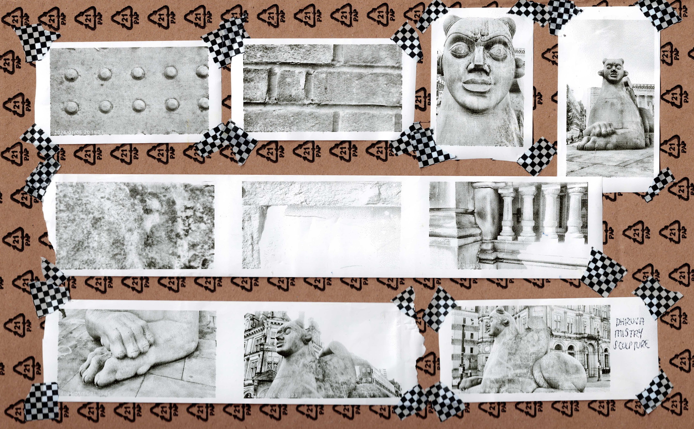
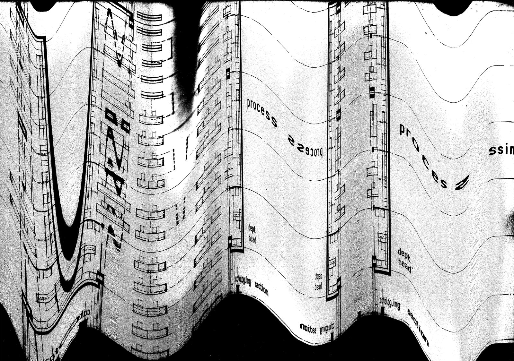
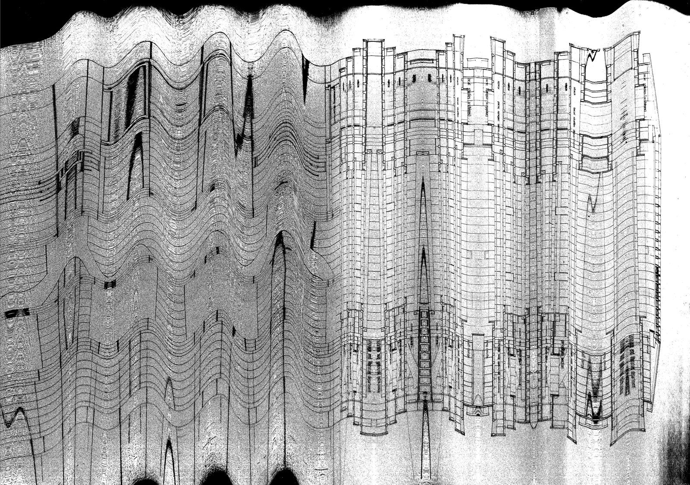
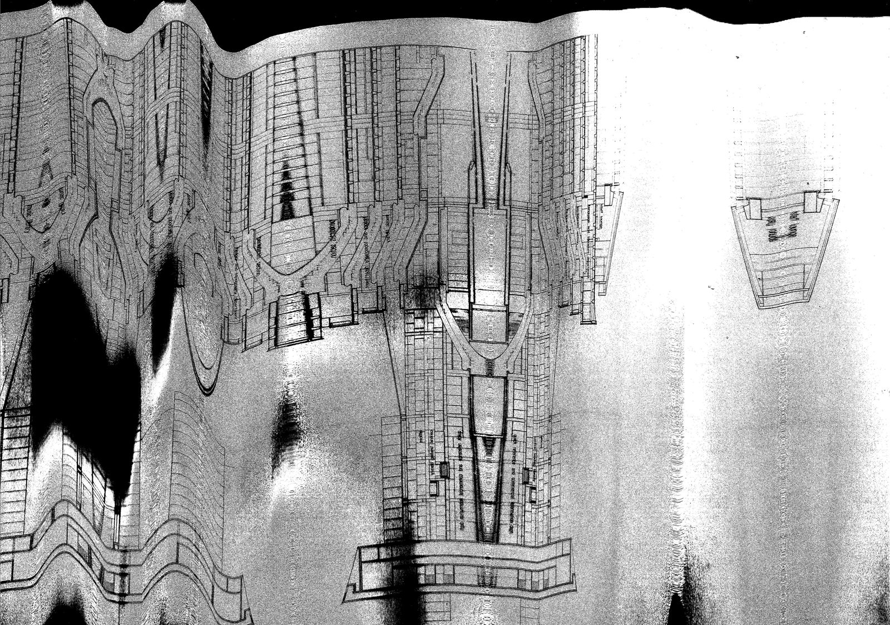
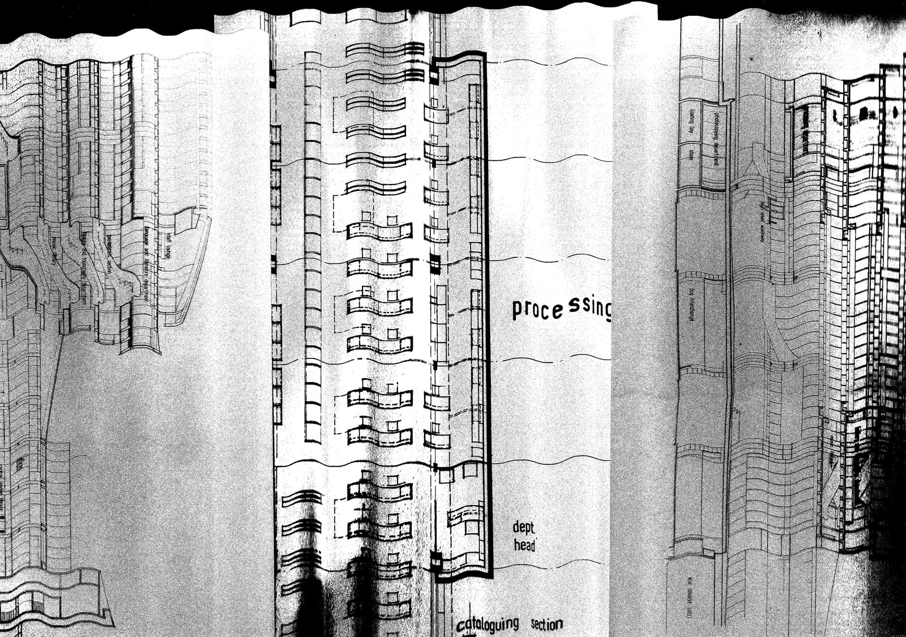

Loading Specimens...
Concrete Specimens: Double click / double tap to enlarge and view texture.
So many floors store knowledge, so what’s left to find out about? No new discoveries, in places where new forms are simply simulations of what once stood here in in space.
Low humming. Bricks stacked layer upon layer upon layer upon layer, tiny stones crumble in the gutter next to cigarette butts. Can you spare any change, please? But no one carries cash these days.
The high street, a giant cash and carry, denial of the grave, a protest on every compass point they congregate around the centre where everything ever written is emblazoned with geometry, sacred. So perfect, it just feels synthetic. A rendezvous with chaos.
The sun shines so brightly off the high-shine metal surface that my third eye aches. I feel blinded from the inside; coronavirus. Airborne particles. A random guy coughs down my neck, and I feel paranoia - alive.
The schizophrenic drowns, whilst the mystic swims in this apocalyptic landscape. Earth imprisoned now she’s known as Mother Board apparently. I went to Brum and all I got was Vertigo.
Automatic writing exercise.
Duration: 5 minutes.
Location: Birmingham Central Library Lvl 4, Archives.




Journey to the centre: Documenting my walk to the new Birmingham Central Library on a thermal print instant camera.




Simulacra of the old Birmingham Central Library: original plans photographed, re-printed, distorted through scanning before uploading.
Recorded on Lvl 4, Archives, of the new Birmingham Central Library. Beginning in the past, slowed and muffled, it gradually speeds up exponentially every four loops, bringing us to the present before it grows more distorted through ring modulation and echo into the future.
Press space to play / pause.